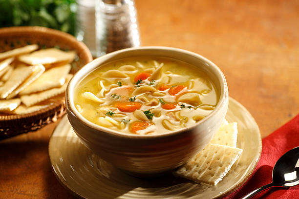

Description
Whether you're feeling under the weather or you just need a little warmth, there's nothing
like homemade chicken noodle soup to warm you up from the inside out.
With this shortcut recipe, you can have the best chicken noodle soup of your life on the table in just 40 minutes.
Ingredients
- 1 tablespoon butter
- 1/2 cup chopped onion
- 4 (14.5 ounce) cans chicken broth
- 1 (14.5 ounce) can vegetable broth
- 1/2 pound chopped cooked chicken breast
- 1 1/2 cups egg noodles
- 1 cup sliced carrots
- 1/2 teaspoon dried basil
- 1/2 teaspoon dried oregano
- salt and ground black pepper to taste
Steps
- Melt butter in a large pot over medium heat. Add onion and celery and cook until just tender, about 5 minutes
- Add chicken broth, vegetable broth, chicken, egg noodles, carrots, basil, oregano, salt and pepper.
- Stir to combine and bring to a boil
- Reduce heat and simmer for 20 minutes